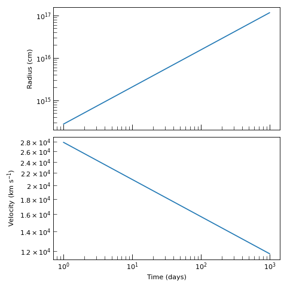
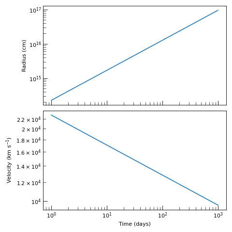
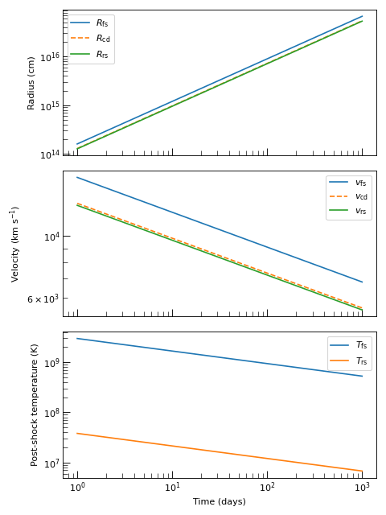
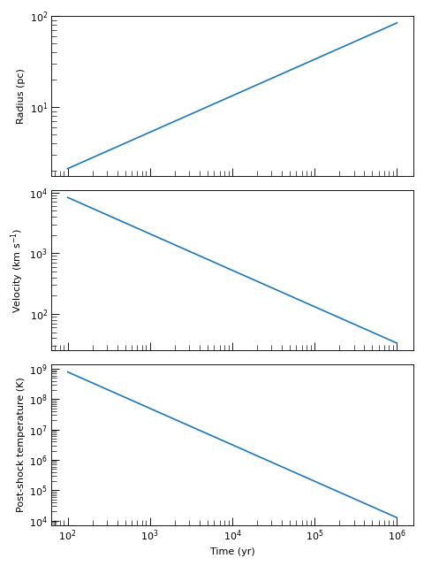
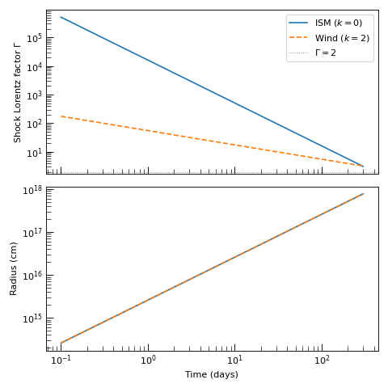

Self-Similar Shock Engines#
Self-similar shock engines provide fast, analytic prescriptions for shock evolution when the ejecta and CSM density profiles take simple power-law forms. For an overview of all available shock engines and guidance on choosing between self-similar and numerical approaches, see Shock Engines.
Non-Relativistic Self-Similar Shocks#
The first major class of self-similar shock engines in Trilobite are non-relativistic, based on the classical Rankine-Hugoniot jump conditions. Three engines cover the most common scenarios; the table below summarises their applicability.
Engine |
Best For |
|---|---|
Ejecta dominated supernova evolution; single-surface (contact discontinuity only) with analytic thin-shell normalization. Fast, stateless. |
|
Same as above for a steady-wind CSM (\(s=2\)); accepts \(\dot{M}\) and \(v_w\) directly. |
|
Two-surface (forward + reverse shock) Chevalier evolution with power-law CSM. Uses a tabulated \((n,s)\) grid for accurate normalization and separate post-shock conditions at each surface. Recommended when thermodynamics at each shock matters. |
|
Same as above for a steady-wind CSM (\(s=2\)). |
|
Sedov-Taylor Phase of SNe, when the shock is driven by thermal pressure in the ejecta. Requires a uniform ambient medium. |
Chevalier Self-Similar Shock Engines#
Both Chevalier engines implement the self-similar ejecta–CSM interaction of Chevalier[1]. This should be used during the early phase of supernova evolution when the dynamics are ejecta dominated.
The ejecta follow a broken power-law in velocity space,
where \(v_t\) and \(K_{\rm ej}\) are fixed by the total ejecta energy \(E_{\rm ej}\) and mass \(M_{\rm ej}\). The CSM follows \(\rho_{\rm CSM}(r) = K_{\rm CSM}\,r^{-s}\). Under these assumptions the shock interface evolves self-similarly,
where \(\zeta\) is a dimensionless constant of order unity that depends on \(n\) and \(s\). For the full derivation see Theory: The Chevalier Self-Similar Solution.
Hint
The ChevalierSelfSimilarShockEngine handles
arbitrary \(s\). The
ChevalierSelfSimilarWindShockEngine is a
convenience specialization for \(s = 2\): it accepts \(\dot{M}\) and \(v_w\)
directly and derives \(K_{\rm CSM} = \dot{M}/(4\pi v_w)\) internally.
Problem Setup#
The ejecta profile is parameterized by its total kinetic energy \(E_{\rm ej}\), total mass \(M_{\rm ej}\), outer velocity index \(n\), and inner index \(\delta\). Convergence of the self-similar solution requires \(n > 5\) and \(\delta < 3\); in practice \(\delta = 0\) or \(1\) is standard for Type II supernovae.
The CSM is parameterized by its power-law index \(s\) and the normalization constant
\(K_{\rm CSM}\). The static helper
normalize_csm_density()
converts a reference density \(\rho_0\) at a reference radius \(r_0\) into
\(K_{\rm CSM} = \rho_0\,r_0^s\). For the wind engine the normalization is derived
internally from \(\dot{M}\) and \(v_w\), so no explicit \(K_{\rm CSM}\) is needed.
Both engines are stateless: the same instance can be called repeatedly with different parameters without re-instantiation.
Example — general engine setup
from astropy import units as u
from trilobite.dynamics.shocks import ChevalierSelfSimilarShockEngine
engine = ChevalierSelfSimilarShockEngine()
# Ejecta parameters
E_ej = 1e51 * u.erg
M_ej = 5.0 * u.Msun
n = 10.0 # outer ejecta index (must be > 5)
delta = 1.0 # inner ejecta index (must be < 3)
s = 2.0 # CSM power-law index
# CSM normalization from a reference density at a reference radius
K_csm = ChevalierSelfSimilarShockEngine.normalize_csm_density(
rho_0=1e-20 * u.g / u.cm**3,
r_0=1e16 * u.cm,
s=s,
)
Example — wind engine setup
from astropy import units as u
from trilobite.dynamics.shocks import ChevalierSelfSimilarWindShockEngine
engine = ChevalierSelfSimilarWindShockEngine()
# Ejecta parameters
E_ej = 1e51 * u.erg
M_ej = 5.0 * u.Msun
n = 10.0
delta = 1.0
# Wind parameters — K_csm is derived internally from these
M_dot = 1e-5 * u.Msun / u.yr
v_wind = 100.0 * u.km / u.s
Solving The Shock Properties#
Call
compute_shock_properties()
with a time array and the physical parameters. The method returns a
ChevalierShockState named tuple with six
Quantity fields:
radius— the shock contact-discontinuity radius \(R(t)\).velocity— the contact-discontinuity velocity \(v_{\rm cd}(t) = \dot{R}(t)\).post_shock_density— immediate post-shock density \(\rho_s\).post_shock_pressure— immediate post-shock pressure \(p_s\).post_shock_temperature— immediate post-shock temperature \(T_s\).thermal_energy_density— post-shock thermal energy density \(e_{\rm th} = p_s/(\gamma-1)\).
Note
Post-shock thermodynamics are computed via
StrongColdShockConditions
using \(v_{\rm cd}\) as the shock velocity, following the standard convention in the
supernova radio-afterglow literature. The true forward shock outruns the contact
discontinuity by a factor \(R_{\rm fs}/R_c > 1\) that depends on \(n\) and
\(s\); the Chevalier Two-Shock Engines below resolves both surfaces separately.
Example — radius and velocity evolution (general engine)
import numpy as np
import matplotlib.pyplot as plt
from astropy import units as u
from trilobite.dynamics.shocks import ChevalierSelfSimilarShockEngine
from trilobite.utils.plot_utils import set_plot_style
engine = ChevalierSelfSimilarShockEngine()
time = np.geomspace(1, 1000, 500) * u.day
K_csm = ChevalierSelfSimilarShockEngine.normalize_csm_density(
rho_0=1e-20 * u.g / u.cm**3,
r_0=1e16 * u.cm,
s=2.0,
)
state = engine.compute_shock_properties(
time=time,
E_ej=1e51 * u.erg,
M_ej=5.0 * u.Msun,
K_csm=K_csm,
n=10.0,
s=2.0,
delta=1.0,
)
set_plot_style()
fig, axes = plt.subplots(2, 1, figsize=(6, 6), sharex=True)
axes[0].loglog(time.to_value(u.day), state.radius.to_value(u.cm))
axes[0].set_ylabel("Radius (cm)")
axes[1].loglog(time.to_value(u.day), state.velocity.to_value(u.km / u.s))
axes[1].set_ylabel(r"Velocity (km s$^{-1}$)")
axes[1].set_xlabel("Time (days)")
plt.tight_layout()
plt.show()
(Source code, png, hires.png, pdf)
{kind=link}
{kind=link}

Example — radius and velocity evolution (wind engine)
import numpy as np
import matplotlib.pyplot as plt
from astropy import units as u
from trilobite.dynamics.shocks import ChevalierSelfSimilarWindShockEngine
from trilobite.utils.plot_utils import set_plot_style
engine = ChevalierSelfSimilarWindShockEngine()
time = np.geomspace(1, 1000, 500) * u.day
state = engine.compute_shock_properties(
time=time,
E_ej=1e51 * u.erg,
M_ej=5.0 * u.Msun,
M_dot=1e-5 * u.Msun / u.yr,
v_wind=100.0 * u.km / u.s,
n=10.0,
delta=1.0,
)
set_plot_style()
fig, axes = plt.subplots(2, 1, figsize=(6, 6), sharex=True)
axes[0].loglog(time.to_value(u.day), state.radius.to_value(u.cm))
axes[0].set_ylabel("Radius (cm)")
axes[1].loglog(time.to_value(u.day), state.velocity.to_value(u.km / u.s))
axes[1].set_ylabel(r"Velocity (km s$^{-1}$)")
axes[1].set_xlabel("Time (days)")
plt.tight_layout()
plt.show()
(Source code, png, hires.png, pdf)
{kind=link}
{kind=link}

Chevalier Two-Shock Engines#
The two-shock engines resolve the forward and reverse shock surfaces separately, rather than treating the shocked interaction region as a single thin shell. This gives accurate post-shock thermodynamics at each surface and uses the tabulated normalization constant \(A\) from the full ODE solution instead of the thin-shell approximation \(\zeta\).
At instantiation both engines call
compute_self_similar_critical_grid()
to precompute a table of the three dimensionless self-similar constants
over a grid of \((n,\,s)\) values. At runtime these constants are bilinearly interpolated for the requested \((n, s)\), so repeated evaluations have negligible cost after the initial build. For the theoretical background on the ODE system, boundary conditions, and pressure matching that fix \(A\) and the radius ratios, see Theory: The Chevalier Self-Similar Solution.
Hint
ChevalierTwoShockSelfSimilarEngine
handles arbitrary \(s\). The
ChevalierTwoShockSelfSimilarWindEngine
is the \(s=2\) specialization that accepts \(\dot{M}\) and \(v_w\) directly.
Important
Unlike the single-surface engines, the two-shock engines are stateful: the
\((n,s)\) table is built at instantiation. Building the default 9 × 6 grid
takes a few seconds on a modern machine. Once constructed, the same instance can
be evaluated at any \((n, s)\) within the tabulated range with negligible
overhead. The n_grid and s_grid constructor arguments allow the grid to
be customised; requesting \((n, s)\) outside the grid raises a
ValueError.
Problem Setup#
The physical inputs are identical to those of
ChevalierSelfSimilarShockEngine.
Example — two-shock general engine
from astropy import units as u
from trilobite.dynamics.shocks import ChevalierTwoShockSelfSimilarEngine
# Table is built once here
engine = ChevalierTwoShockSelfSimilarEngine()
E_ej = 1e51 * u.erg
M_ej = 5.0 * u.Msun
n = 10.0 # outer ejecta index (must be > 5)
delta = 1.0 # inner ejecta index (must be < 3)
s = 2.0 # CSM power-law index
K_csm = (5e-16 * u.g / u.cm**3) * (1e15 * u.cm)**2 # K_CSM for s=2
Example — two-shock wind engine
from astropy import units as u
from trilobite.dynamics.shocks import ChevalierTwoShockSelfSimilarWindEngine
engine = ChevalierTwoShockSelfSimilarWindEngine()
E_ej = 1e51 * u.erg
M_ej = 5.0 * u.Msun
n = 10.0
delta = 1.0
# K_csm is derived internally from these
M_dot = 1e-5 * u.Msun / u.yr
v_wind = 100.0 * u.km / u.s
Solving The Shock Properties#
Call
compute_shock_properties()
with a time array and the physical parameters. The method returns a
ChevalierTwoShockState named tuple with
fourteen Quantity fields — six kinematic and eight thermodynamic:
radius_cd,radius_fs,radius_rs— positions of the contact discontinuity, forward shock, and reverse shock.velocity_cd,velocity_fs,velocity_rs— lab-frame velocities \(v = m\,R/t\) for each surface, where \(m = (n-3)/(n-s)\).density_fs,density_rs— immediate post-shock densities.pressure_fs,pressure_rs— immediate post-shock pressures.temperature_fs,temperature_rs— immediate post-shock temperatures.thermal_energy_density_fs,thermal_energy_density_rs— post-shock thermal energy densities \(e_{\rm th} = p/(\gamma-1)\).
Note
At the forward shock, the Rankine–Hugoniot conditions are applied using the lab-frame shock speed \(v_{\rm fs}\) against stationary CSM at density \(K_{\rm CSM}\,R_{\rm fs}^{-s}\).
At the reverse shock, they are applied in the shock frame using the ejecta relative velocity \(v_{\rm rel} = (1-m)\,R_{\rm rs}/t\) against upstream ejecta at density \(K_{\rm ej}\,t^{n-3}\,R_{\rm rs}^{-n}\). Because the ejecta are denser and slower than the surrounding CSM at comparable radii, the reverse shock is typically cooler than the forward shock by one to two orders of magnitude.
Example — two-shock kinematics and temperatures
import numpy as np
import matplotlib.pyplot as plt
from astropy import units as u
from trilobite.dynamics.shocks import ChevalierTwoShockSelfSimilarEngine
from trilobite.utils.plot_utils import set_plot_style
engine = ChevalierTwoShockSelfSimilarEngine()
time = np.geomspace(1, 1000, 300) * u.day
K_csm = (5e-16 * u.g / u.cm**3) * (1e15 * u.cm)**2
state = engine.compute_shock_properties(
time=time,
E_ej=1e51 * u.erg,
M_ej=5.0 * u.Msun,
K_csm=K_csm,
n=10.0,
s=2.0,
delta=1.0,
)
set_plot_style()
fig, axes = plt.subplots(3, 1, figsize=(6, 8), sharex=True)
t_day = time.to_value(u.day)
axes[0].loglog(t_day, state.radius_fs.to_value(u.cm), label=r"$R_{\rm fs}$")
axes[0].loglog(t_day, state.radius_cd.to_value(u.cm), ls="--", label=r"$R_{\rm cd}$")
axes[0].loglog(t_day, state.radius_rs.to_value(u.cm), label=r"$R_{\rm rs}$")
axes[0].set_ylabel("Radius (cm)")
axes[0].legend()
axes[1].loglog(t_day, state.velocity_fs.to_value(u.km / u.s), label=r"$v_{\rm fs}$")
axes[1].loglog(t_day, state.velocity_cd.to_value(u.km / u.s), ls="--", label=r"$v_{\rm cd}$")
axes[1].loglog(t_day, state.velocity_rs.to_value(u.km / u.s), label=r"$v_{\rm rs}$")
axes[1].set_ylabel(r"Velocity (km s$^{-1}$)")
axes[1].legend()
axes[2].loglog(t_day, state.temperature_fs.to_value(u.K), label=r"$T_{\rm fs}$")
axes[2].loglog(t_day, state.temperature_rs.to_value(u.K), label=r"$T_{\rm rs}$")
axes[2].set_ylabel("Post-shock temperature (K)")
axes[2].set_xlabel("Time (days)")
axes[2].legend()
plt.tight_layout()
plt.show()
(Source code, png, hires.png, pdf)
{kind=link}
{kind=link}

Sedov–Taylor Shock Engine#
The SedovTaylorShockEngine implements the
classic point-explosion blast wave in a uniform ambient medium
[2] [3]. The shock radius and
velocity evolve as
where \(\beta(\gamma)\) is computed once at instantiation by numerically integrating the self-similar Sedov profiles. In addition to the shock kinematics, the engine returns immediate post-shock thermodynamic quantities from the strong-shock Rankine–Hugoniot conditions,
For the theoretical background see Theory: Sedov-Taylor Self-Similar Solution.
Problem Setup#
Unlike the Chevalier engines, the gas parameters \(\gamma\) (adiabatic index) and \(\mu\) (mean molecular weight in units of the proton mass) are fixed at instantiation because \(\beta(\gamma)\) is evaluated by numerical quadrature at that point. The explosion energy \(E\) and ambient density \(\rho_0\) are supplied at call time.
Common choices are \(\gamma = 5/3\) (monatomic ideal gas, the default) and \(\gamma = 4/3\) (radiation-dominated). The default \(\mu = 0.5\) is appropriate for a fully ionized hydrogen plasma.
Example — instantiation
from trilobite.dynamics.shocks import SedovTaylorShockEngine
# Default: monatomic ideal gas, fully ionized hydrogen
engine = SedovTaylorShockEngine()
# Radiation-dominated gas
engine_rad = SedovTaylorShockEngine(gamma=4.0 / 3.0, mu=0.5)
Solving The Shock Properties#
Call
compute_shock_properties()
with a time array, an explosion energy, and an ambient density. The method returns a
SedovTaylorShockState named tuple with six
Quantity fields:
radius— shock radius \(R_s(t)\).velocity— shock velocity \(v_s(t)\).post_shock_density— immediate post-shock density \(\rho_s\).post_shock_pressure— immediate post-shock pressure \(p_s\).post_shock_temperature— immediate post-shock temperature \(T_s\).thermal_energy_density— post-shock thermal energy density \(e_{\rm th}\).
Example — kinematics and post-shock temperature
import numpy as np
import matplotlib.pyplot as plt
from astropy import units as u
from trilobite.dynamics.shocks import SedovTaylorShockEngine
from trilobite.utils.plot_utils import set_plot_style
engine = SedovTaylorShockEngine()
time = np.geomspace(100, 1e6, 500) * u.yr
state = engine.compute_shock_properties(
time=time,
E=1e51 * u.erg,
rho_0=1.67e-24 * u.g / u.cm**3, # approximately 1 H atom per cm^3
)
set_plot_style()
fig, axes = plt.subplots(3, 1, figsize=(6, 8), sharex=True)
t_yr = time.to_value(u.yr)
axes[0].loglog(t_yr, state.radius.to_value(u.pc))
axes[0].set_ylabel("Radius (pc)")
axes[1].loglog(t_yr, state.velocity.to_value(u.km / u.s))
axes[1].set_ylabel(r"Velocity (km s$^{-1}$)")
axes[2].loglog(t_yr, state.post_shock_temperature.to_value(u.K))
axes[2].set_ylabel("Post-shock temperature (K)")
axes[2].set_xlabel("Time (yr)")
plt.tight_layout()
plt.show()
(Source code, png, hires.png, pdf)
{kind=link}
{kind=link}

Weaver Wind Shock Engine#
Note
This engine is not yet implemented.
Relativistic Self-Similar Shocks#
In addition to the non-relativistic shock engines available in Trilobite, we also provide a number of fully relativistic self-similar shock engines based on the various known solutions to ultra-relativistic flows. These are very useful for things like GRB modeling, jets, etc.
Blandford–McKee Shock Engine#
The Blandford–McKee (BM) engine implements the classic ultra-relativistic self-similar blast-wave solution of Blandford and McKee[4] for a relativistic explosion of isotropic-equivalent energy \(E\) expanding into an external medium with a power-law density profile
This is the natural starting point for GRB afterglow modeling and any other scenario in which the blast wave is ultra-relativistic (\(\Gamma \gg 1\)).
Engine |
Best For |
|---|---|
Ultra-relativistic blast wave in a general power-law external medium (\(k < 3\)). All analytic; no ODE integration required. |
|
Same as above for a stellar-wind external medium (\(k = 2\)). Accepts \(\dot{M}\) and \(v_w\) directly rather than \(K\). |
The core kinematic relation follows from integrating the BM self-similar energy density over the shocked shell. The closed-form profiles
where \(\chi = 1 + 2(m+1)\Gamma^2(1-r/R)\) and \(m = 3-k\), yield the analytic normalization coefficient
so that energy conservation gives the shock Lorentz factor as a function of radius:
In the ultra-relativistic limit \(R \approx ct\), so
For the full derivation see Theory: The Blandford–McKee Solution.
Hint
BlandfordMcKeeShockEngine
handles any \(k < 3\). The
BlandfordMcKeeWindShockEngine
fixes \(k = 2\) and accepts \(\dot{M}\) and \(v_w\) directly,
computing \(K = \dot{M}/(4\pi v_w)\) internally.
Problem Setup#
The two physical inputs are the isotropic-equivalent explosion energy \(E\) and
the external medium normalization \(K\). The static helper
normalize_csm_density()
converts a reference density \(\rho_0\) at radius \(r_0\) into
\(K = \rho_0\,r_0^k\). For the wind engine, \(K\) is computed internally from
\(\dot{M}\) and \(v_w\).
Two constructor parameters control numerical behavior rather than physics:
lorentz_warn_threshold(default 2.0) — aRuntimeWarningis emitted whenever any \(\Gamma(t)\) drops below this value, indicating that the ultra-relativistic approximation is breaking down.gamma_hat(default \(4/3\)) — the adiabatic index used for post-shock thermodynamics.
A ValueError is raised if \(k \geq 3\).
Example — general engine setup
from astropy import units as u
from trilobite.dynamics.shocks import BlandfordMcKeeShockEngine
engine = BlandfordMcKeeShockEngine()
E = 1e52 * u.erg # isotropic-equivalent explosion energy
k = 0.0 # uniform ISM
# CSM normalization from a reference density
K = BlandfordMcKeeShockEngine.normalize_csm_density(
rho_0=1.67e-24 * u.g / u.cm**3, # 1 proton per cm^3
r_0=1.0 * u.cm,
k=k,
)
Example — wind engine setup
from astropy import units as u
from trilobite.dynamics.shocks import BlandfordMcKeeWindShockEngine
engine = BlandfordMcKeeWindShockEngine()
E = 1e52 * u.erg
M_dot = 1e-5 * u.Msun / u.yr
v_wind = 1000.0 * u.km / u.s # K derived internally as M_dot/(4 pi v_wind)
Solving The Shock Properties#
Call
compute_shock_properties()
with a time array and the physical parameters. The method returns a
BlandfordMcKeeShockState named tuple
with eleven fields. Dimensionless fields are returned as bare arrays; all fields with
physical dimensions carry Quantity units.
Shock kinematics:
radius— shock radius \(R(t) \approx ct\).lorentz_factor— shock Lorentz factor \(\Gamma(t)\).beta— shock speed in units of \(c\), \(\beta = v/c\).velocity— shock speed \(v = \beta c\).fluid_lorentz_factor— lab-frame Lorentz factor of the immediately post-shock fluid, \(\gamma_2 = \Gamma/\sqrt{2}\) (from the BM profile \(g(\chi=1)=1\)).
Post-shock proper (comoving-frame) quantities:
post_shock_pressure— proper pressure \(p_2 = \tfrac{2}{3}\rho_{\rm ext}c^2\Gamma^2\).post_shock_temperature— proper temperature \(T_2\) from the Maxwell–Jüttner internal-energy inversion.post_shock_comoving_density— proper rest-mass density \(\rho_2\).
Lab-frame quantities:
post_shock_lab_density— lab-frame rest-mass density \(\gamma_2\rho_2\).thermal_energy_density_comoving— proper internal (thermal) energy density \(U_{\rm int} = p_2/(\hat\gamma-1)\).thermal_energy_density_lab— lab-frame energy density \(T^{00} = (e_2+p_2)\gamma_2^2-p_2\).
Note
All post-shock quantities are computed analytically from \(\Gamma\) using the BM profile values at the shock surface (\(\chi=1\)), bypassing the relativistic Rankine–Hugoniot root-finder. This makes every field exact to floating-point precision for any \(\Gamma\).
Example — Lorentz factor and radius evolution
import numpy as np
import matplotlib.pyplot as plt
from astropy import units as u
from trilobite.dynamics.shocks import (
BlandfordMcKeeShockEngine,
BlandfordMcKeeWindShockEngine,
)
from trilobite.utils.plot_utils import set_plot_style
set_plot_style()
fig, axes = plt.subplots(2, 1, figsize=(6, 6), sharex=True)
time = np.geomspace(0.1, 300, 400) * u.day
E = 1e52 * u.erg
# --- ISM (k = 0) ---
ism = BlandfordMcKeeShockEngine()
K_ism = BlandfordMcKeeShockEngine.normalize_csm_density(
rho_0=1.67e-24 * u.g / u.cm**3,
r_0=1.0 * u.cm,
k=0.0,
)
s_ism = ism.compute_shock_properties(time=time, E=E, K_csm=K_ism, k=0.0)
# --- Wind (k = 2) ---
wind = BlandfordMcKeeWindShockEngine()
s_wind = wind.compute_shock_properties(
time=time, E=E,
M_dot=1e-5 * u.Msun / u.yr,
v_wind=1000.0 * u.km / u.s,
)
t_day = time.to_value(u.day)
axes[0].loglog(t_day, s_ism.lorentz_factor, label=r"ISM ($k=0$)")
axes[0].loglog(t_day, s_wind.lorentz_factor, label=r"Wind ($k=2$)", ls="--")
axes[0].axhline(2, color="gray", lw=0.8, ls=":", label=r"$\Gamma = 2$")
axes[0].set_ylabel(r"Shock Lorentz factor $\Gamma$")
axes[0].legend()
axes[1].loglog(t_day, s_ism.radius.to_value(u.cm), label=r"ISM ($k=0$)")
axes[1].loglog(t_day, s_wind.radius.to_value(u.cm), label=r"Wind ($k=2$)", ls="--")
axes[1].set_ylabel("Radius (cm)")
axes[1].set_xlabel("Time (days)")
plt.tight_layout()
plt.show()
(Source code, png, hires.png, pdf)
{kind=link}
{kind=link}
